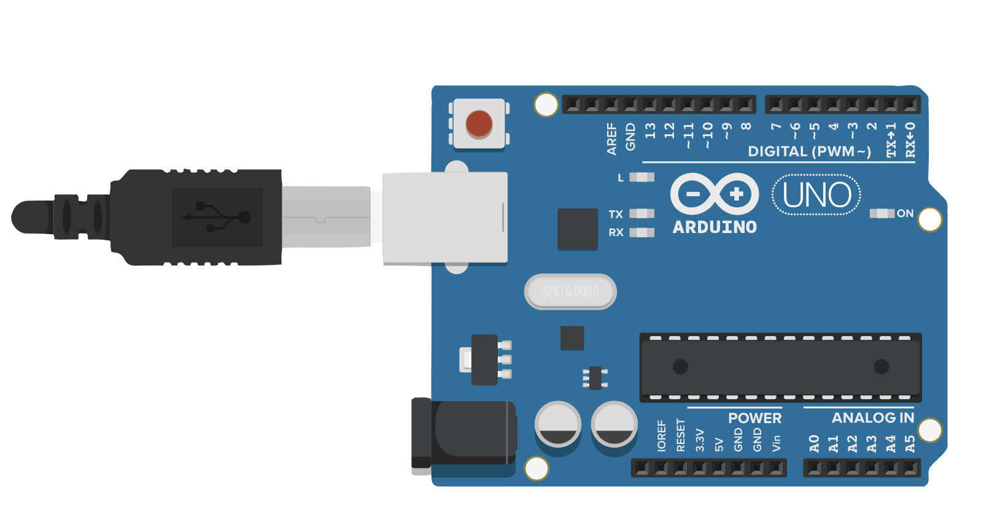
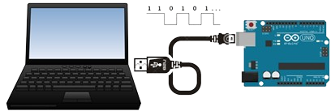

Objetivo de aprendizaje
Reconocer los fundamentos básicos de la programación de sistemas físicos mediante el uso de Arduino integrando leds y resistencias para realizar una simulación funcional de un semáforo controlado por código.
Reconocer los fundamentos básicos de la programación de sistemas físicos mediante el uso de Arduino integrando leds y resistencias para realizar una simulación funcional de un semáforo controlado por código.
La placa Arduino UNO es una de las mejores opciones para empezar a aprender sobre programación y electrónica, especialmente si es tu primera vez usando Arduino. Es la más popular y recomendada porque es fácil de usar, resistente, y cuenta con una gran cantidad de guías, ejemplos y recursos disponibles en internet; está basada en un microcontrolador llamado ATmega328P, que es el "cerebro" de la placa (DeMeyer, 2023).Tiene 14 pines digitales que se pueden usar para encender luces, hacer sonar un buzzer o leer sensores. De esos 14 pines, 6 pueden generar señales PWM, que sirven para controlar, por ejemplo, la intensidad de una luz o la velocidad de un motor.

Además, tiene 6 entradas analógicas que permiten leer señales variables, como la temperatura o la luz ambiente. También cuenta con un cristal de 16 MHz (que funciona como su reloj interno), una conexión USB para programarla desde la computadora, un puerto de alimentación (por si no se usa el USB), y un botón de reinicio (Fernández, 2025). Por tanto, el Arduino UNO tiene todo lo necesario para comenzar a crear proyectos electrónicos, solo necesitas conectarla por USB a tu computadora o con un adaptador de corriente, y ya puedes empezar a programarla haciendo que interactúe con el mundo real.

Un LED (Diodo Emisor de Luz) es un pequeño componente electrónico que se enciende cuando la electricidad pasa por él (Delgado, 2022). Es muy común en controles remotos, linternas, televisores y computadoras.
¿Sabías qué...?
Los LED consumen muy poca energía y duran mucho tiempo, por eso se usan en casi todos los aparatos electrónicos modernos.
Partes de un LED
Un LED tiene dos patitas:
La más larga se llama ánodo (+) y es donde entra la electricidad.
La más corta se llama cátodo (–) y es por donde sale.
Para que funcione correctamente, hay que conectarlo respetando la polaridad.
♦Si conectas el LED al revés, el circuito no funcionará.
La resistencia es una medida de la oposición al flujo de corriente en un circuito eléctrico, se mide en ohmios, que se simbolizan con la letra griega omega (Ω) (López, 2020). Se denominaron ohmios en honor a Georg Simon Ohm (1784-1854), un físico alemán que estudió la relación entre voltaje, corriente y resistencia.

Para controlar varios LEDs, como en un semáforo, necesitas comprender:
Pasos detallos para la conexión de LEDs
Paso 1. Inserta los LEDs en la protoboard:
Paso 2. Conecta cada LED a una resistencia de 220 ohmios:
Paso 3. Conecta los LEDs a los pines digitales del Arduino:
| Materiales | Descripción |
| Computador. | |
| Placa Arduino UNO. | Controlador principal del circuito. |
| 3 LEDs (rojo, amarillo y verde). | Representan las luces del semáforo. |
| Resistencias 220Ω. | Protegen los LEDs de sobrecarga. |
| Simulador Tinkercad. | Alternativa virtual para practicar sin kit físico. |
| Tablero didáctico de robótica. | Para simular en físico. |
| Cables RCA o jumpers. |
Conectores entre componentes. |
Obra publicada con Licencia Creative Commons Reconocimiento No comercial Compartir igual 4.0